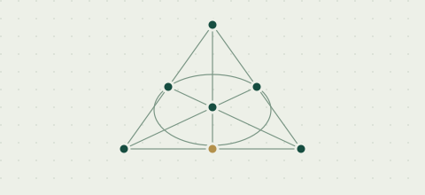

01 Finite StructuresCryptographic Functions & Finite Geometry
I study Almost Perfect Non-linear (APN), Perfect Non-linear (PN), and Bent Functions over Finite Fields, together with their connections to Walsh Spectra, Vector Space Partitions, Blocking Sets, and Additive Combinatorics.
Read the Walsh Spectra paper